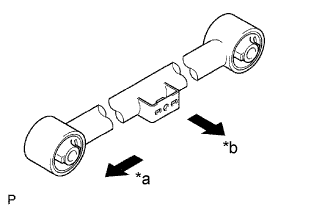
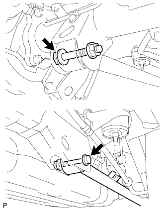

REAR LOWER ARM > INSTALLATION |
| 1. TEMPORARILY INSTALL LOWER CONTROL ARM ASSEMBLY LH |
|  |
Temporarily install the lower control arm assembly with the bolt and nut.
| *a | Front |
| *b | Outer Side |
Temporarily install the lower control arm assembly to the rear axle housing with the nut and bolt.
| 2. CONNECT NO. 3 PARKING BRAKE CABLE ASSEMBLY |
Connect the No. 3 parking brake cable assembly with the bolt.
| 3. INSTALL REAR WHEEL |
| 4. STABILIZE SUSPENSION |
Lower the vehicle.
Bounce the vehicle up and down several times to stabilize the suspension.
| 5. TIGHTEN LOWER CONTROL ARM ASSEMBLY LH |
|  |
Tighten the 2 bolts.